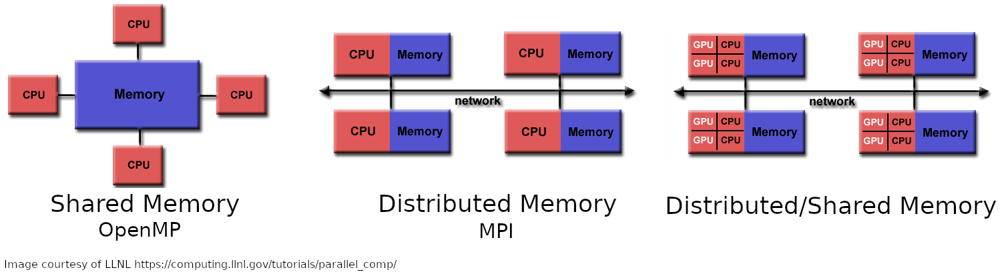
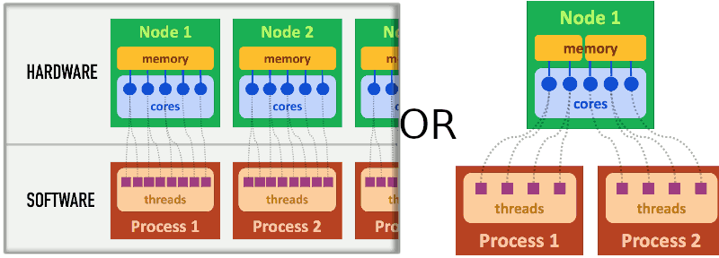
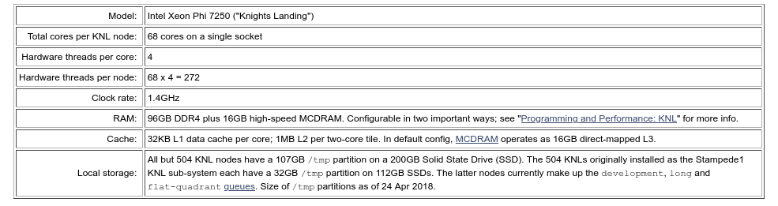
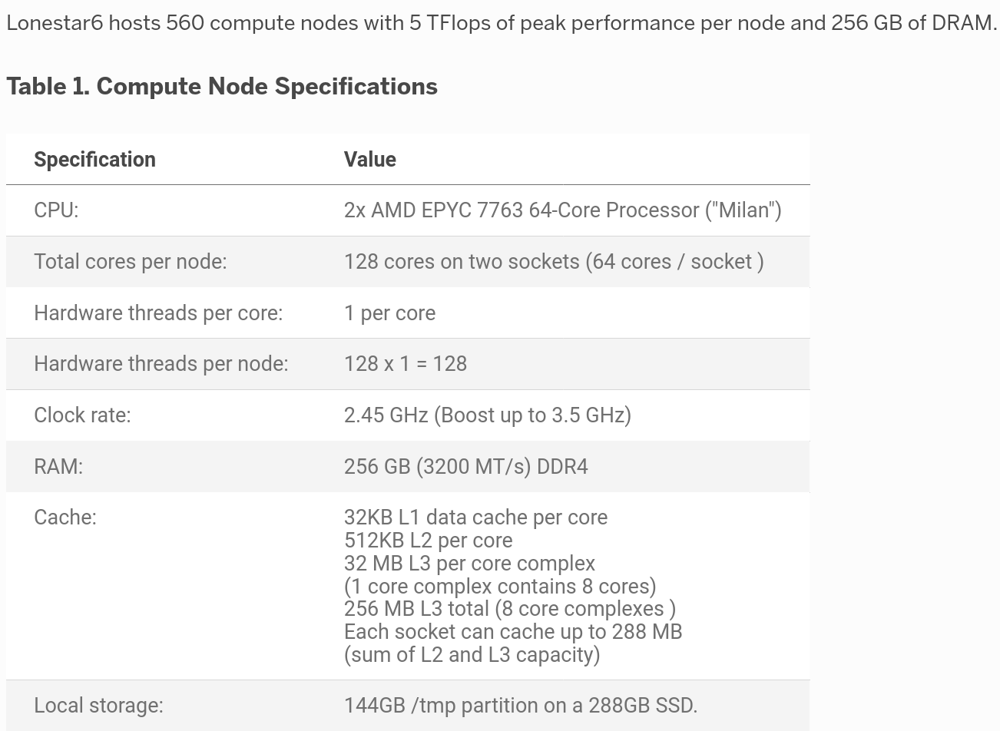
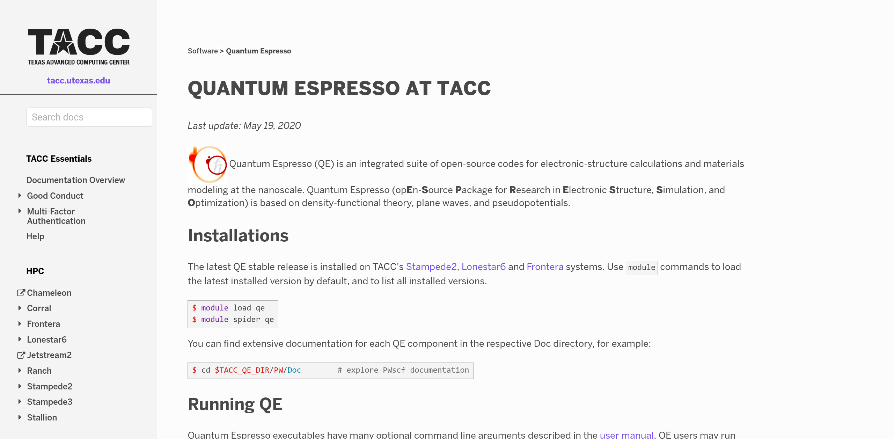
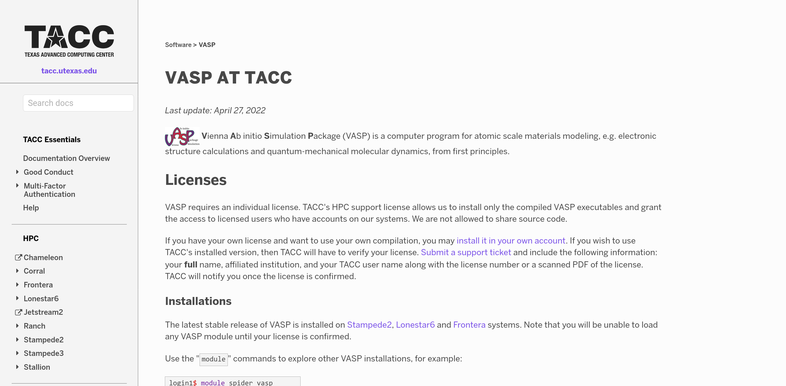
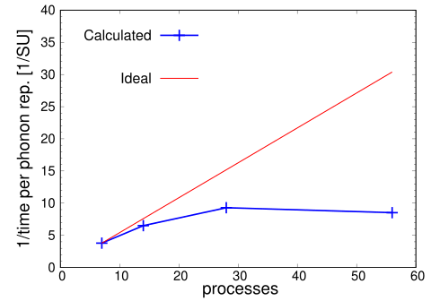

Wang Materials Group, UT Austin
Updated: June 2023
Serial v parallel: Which compute tasks are independent and would benefit from multiple processors?
Basic architecture (see also e.g., here)


Example: Stampede2 (see also documentation)

Example: Lonestar6 (see also documentation)



Example: Accessing TACC resources
The authenticity of host 'stampede2.tacc.utexas.edu (129.114.63.44)' can't be established.
ECDSA key fingerprint is SHA256:SegC2YyyftiRpdwhXqNZE+15RyGeFSal4Vuz0HYJ5E8.
Are you sure you want to continue connecting (yes/no/[fingerprint])? yes
Warning: Permanently added 'stampede2.tacc.utexas.edu,129.114.63.44' (ECDSA) to the list of known hosts.
To access the system:
1) If not using ssh-keys, please enter your TACC password at the password prompt
2) At the TACC Token prompt, enter your 6-digit code followed by <return>.
Password:
TACC Token Code:
Last login: Thu Feb 14 11:37:13 2019 from 149.165.168.51
------------------------------------------------------------------------------
Welcome to the Stampede2 Supercomputer
Texas Advanced Computing Center, The University of Texas at Austin
------------------------------------------------------------------------------
** Unauthorized use/access is prohibited. **
If you log on to this computer system, you acknowledge your awareness
of and concurrence with the UT Austin Acceptable Use Policy. The
University will prosecute violators to the full extent of the law.
TACC Usage Policies:
http://www.tacc.utexas.edu/user-services/usage-policies/
______________________________________________________________________________
Welcome to Stampede2, *please* read these important system notes:
--> Stampede2 user documentation is available at:
https://portal.tacc.utexas.edu/user-guides/stampede2
2/24/2022: OS was updated to latest CentOS 7.9 release along with Slurm 20,
OPA 10.11 and Lustre 2.12 updates. Please submit a support ticket
if you encounter any issues after the update.
The icx-normal queue is now available for users, up to 40 nodes
with 80 cores per node for a single job.
--------------------- Project balances for user wwwennie ----------------------
| Name Avail SUs Expires | |
| TG-MAT220010 1600 2023-04-06 | |
------------------------ Disk quotas for user wwwennie ------------------------
| Disk Usage (GB) Limit %Used File Usage Limit %Used |
| /home1 2.4 10.0 24.34 3541 200000 1.77 |
| /work2 0.0 1024.0 0.00 3 3000000 0.00 |
| /scratch 0.0 0.0 0.00 66 0 0.00 |
-------------------------------------------------------------------------------Example: Stampede2 at TACC
job.script#!/bin/bash
#SBATCH -J qe # define the job name
#SBATCH -o qe.%j.out # define stdout & stderr output files
#SBATCH -e qe.%j.err
#SBATCH -N 4 # request 4 nodes
#SBATCH -n 256 # 256 total tasks = 64 tasks/node
#SBATCH -p normal # submit to "normal" queue
#SBATCH -t 4:00:00 # run for 4 hours max
#SBATCH -A projectname
module load qe/6.2.1 # setup environment
ibrun pw.x -input qeinput > qe_test.out # launch jobExample: Quantum ESPRESSO
Goal: find most efficient parallelization scheme
How do you choose the parallelization parameters?
–> Documentation/forums, tutorials and small test cases, and scaling tests!
Scaling tests: estimating resource usage; in this case, based on small tests of parallelization schemes
TACC measures compute sources in terms of Service Units (SUs)
SUs charged = (Number of nodes) x (job wall-clock time) x (multiplier, which depends on machine)
DFT codes scale with \(O(N^3)\) where \(N\) is some measure of system size (e.g., number of electrons, number of bands, number of k-points)
In general, not all parts of a DFT calculation scales linearly with processors (general scaling in HPC)
A simulation cell of about 100 atoms could take anywhere between a few hours to a few weeks (e.g., depending on functional)
To find the most efficient and optimal running scheme!
Not enough parallelization: wait too long for calculation to finish
Improper parallelization: idle processors, waste of hours, waste of energy! (see also e.g., Green Algorithms 4 HPC
set up a working calculation that is representative of the types of calculations you anticipate for the project within the next allocation period (usually 6 months to a year).
enumerate a few parallelization schemes and set up your calculations
run the minimum calculation needed
set_scaling.sh
#!/bin/bash
proc=(144 160 320) # number of requested processors
npool=(2 4 6 8) # using k-point parallelization in QE
# loop over each possible combination of processors
# and k-point parallelization
# make a separate directory p<processors>n<pools>
# generate correpsonding input files and job submission script
for i in "${proc[@]}"; do
for j in "${npool[@]}"; do
mkdir p${i}n${j}; cd p${i}n${j}
# copy template input files
cp -r ../input.in ../*UPF ../phrun.sh .
# substitute parallelization into run command
# of a template job submission script called phrun.sh
sed -i "s/REPL1/${i}/g" phrun.sh; sed -i "s/REPL2/${j}/g" phrun.sh
cd ../
done
done
Each HPC center has its own allocation cycle and policies (e.g., at TACC)
Group Box Example writeup; must have UT EID